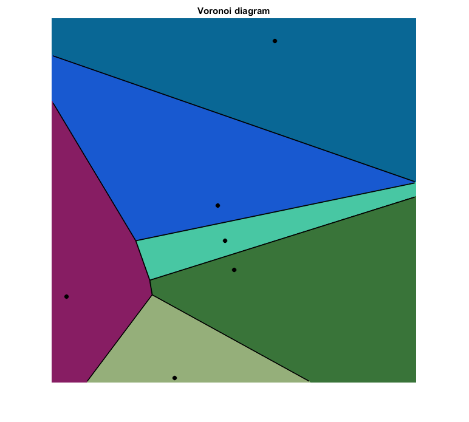

Delaunay triangulation
This program demostrates iterative construction of delaunay triangulation and voronoi tesselation.
It draws a random set of points in an image and then delaunay triangulates them.
Sources:
function delaunay2_demo() % prepare delay = 0.25; active_facet_color = [0, 0, 255]; delaunay_color = [255, 255, 255]; rect = [0, 0, 600, 600]; window = figure('KeyPressFcn',@(o,e)setappdata(o,'flag',true)); setappdata(window, 'flag',false); disp('This program builds the traingulation interactively,'); disp('you may stop this process by hitting any key.'); % initialize subdiv = cv.Subdiv2D(rect); img = zeros([rect(3:4) 3], 'uint8'); h = imshow(img); title('Delaunay Triangulation') % for i=1:100 % generate random 2D point fp = [randi([5 rect(3)-5]), randi([5 rect(4)-5])]; % locate and draw triangle containing point img = locate_point(img, subdiv, fp, active_facet_color); set(h, 'CData',img), xlabel(num2str(i)) pause(delay) flag = getappdata(window, 'flag'); if isempty(flag) || flag, break; end % add point and draw the new triangulation subdiv.insert(fp); img(:) = 0; img = draw_subdiv(img, subdiv, delaunay_color); set(h, 'CData',img) pause(delay) flag = getappdata(window, 'flag'); if isempty(flag) || flag, break; end end fprintf('\nGenerated %d random points.\n', i); % draw the Voronoi diagram img(:) = 0; img = paint_voronoi(img, subdiv); %img = draw_subdiv(img, subdiv, delaunay_color); figure, imshow(img), title('Voronoi diagram') end function img = locate_point(img, subdiv, fp, active_color) [~, e0, vertex] = subdiv.locate(fp); if e0 > 0 e = e0; while true [ee1, org] = subdiv.edgeOrg(e); [ee2, dst] = subdiv.edgeDst(e); if ee1 > 0 && ee2 > 0 img = cv.line(img, org, dst, ... 'Color',active_color, 'Thickness',3, 'LineType','AA'); end e = subdiv.getEdge(e, 'NextAroundLeft'); if e == e0 break; end end end % draw_subdiv_point img = cv.circle(img, fp, 5, ... 'Color',fliplr(active_color), 'Thickness','Filled', 'LineType',8); end function img = draw_subdiv(img, subdiv, delaunay_color) opts = {'Color',delaunay_color, 'Thickness',1, 'LineType','AA'}; if true triangleList = subdiv.getTriangleList(); % faster implementation triangleList = cellfun(@(t) num2cell(reshape(round(t),2,3),1), ... triangleList, 'UniformOutput',false); img = cv.polylines(img, triangleList, 'Closed',true, opts{:}); % slower %{ for i=1:numel(triangleList) t = round(triangleList{i}); img = cv.line(img, t(1:2), t(3:4), opts{:}); img = cv.line(img, t(3:4), t(5:6), opts{:}); img = cv.line(img, t(5:6), t(1:2), opts{:}); end %} else edgeList = subdiv.getEdgeList(); % faster implementation edgeList = cellfun(@(e) num2cell(reshape(round(e),2,2),1), ... edgeList, 'UniformOutput',false); img = cv.polylines(img, edgeList, 'Closed',true, opts{:}); % slower %{ for i=1:numel(edgeList) e = round(edgeList{i}); img = cv.line(img, e(1:2), e(3:4), opts{:}); end %} end end function img = paint_voronoi(img, subdiv) % get Voronoi faces and corresponding centers [facets, centers] = subdiv.getVoronoiFacetList([]); for i=1:numel(facets) % draw face as a colored closed patch color = randi([0 255], [1 3]); img = cv.fillConvexPoly(img, facets{i}, 'Color',color, 'LineType',8); % draw the center as a dot img = cv.circle(img, centers{i}, 3, ... 'Thickness','Filled', 'LineType','AA'); end % draw the borders img = cv.polylines(img, facets, 'Closed',true, ... 'Thickness',1, 'LineType','AA'); end
This program builds the traingulation interactively, you may stop this process by hitting any key. Generated 6 random points.